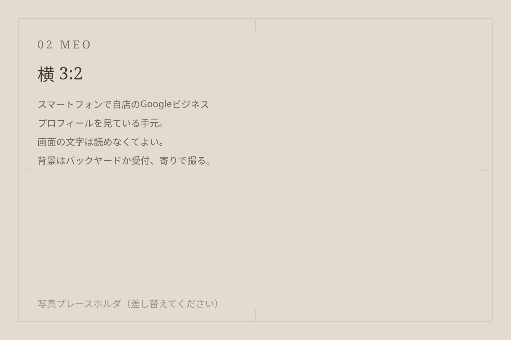
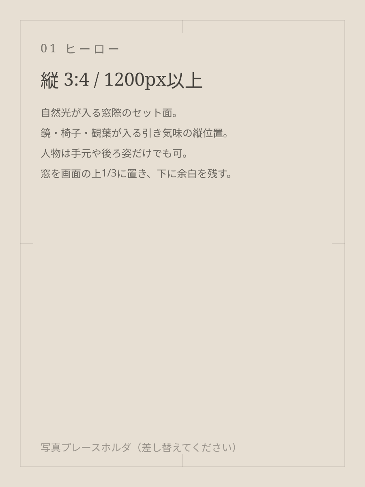
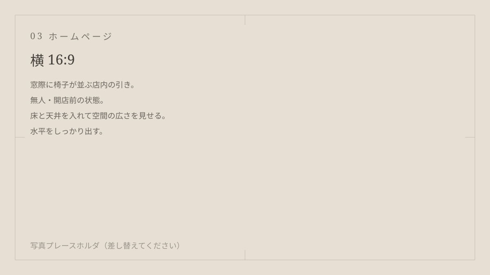
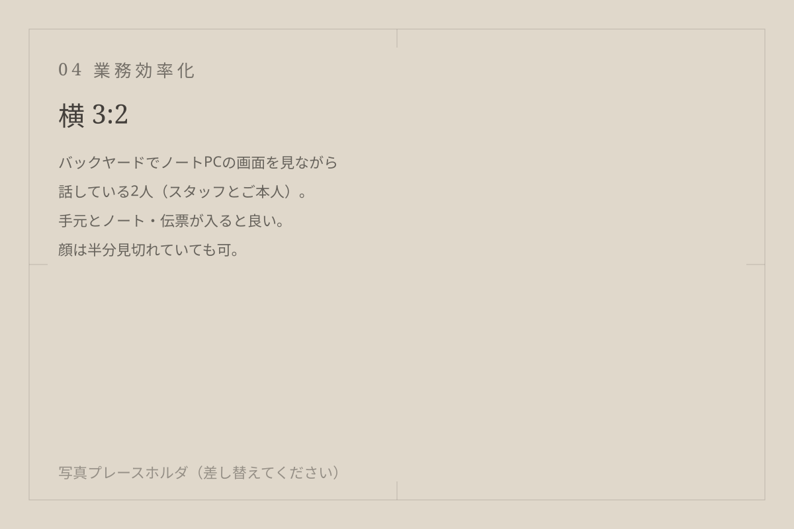
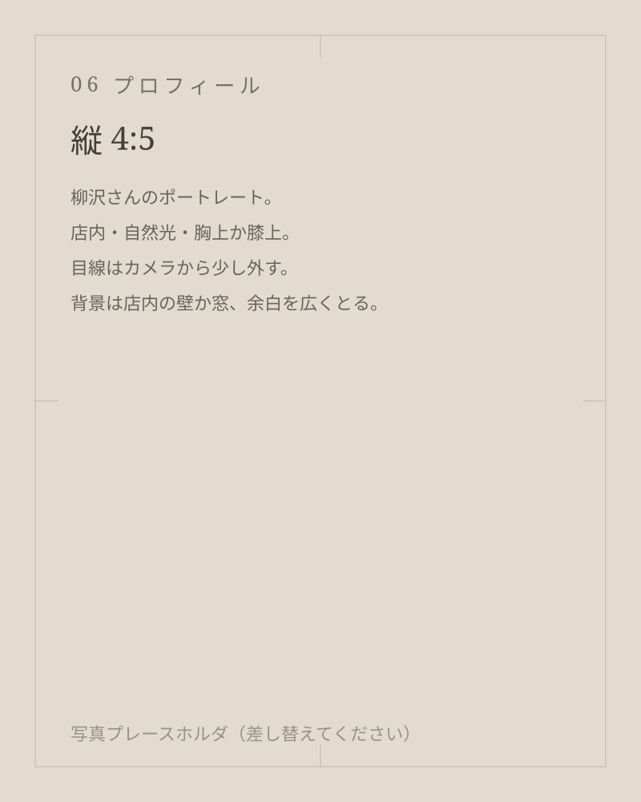

MEO・Googleビジネスプロフィール運用
検索して最初に見られる場所を、放置しない。
写真と投稿の更新、口コミへの返信文、店舗情報の整え方をまとめて運用します。 順位だけを追わず、「電話・ルート・予約のどれが押されたか」を毎月見て、次の一手を決めます。
- 写真の選定と差し替え
- 投稿の作成・掲載
- 口コミ返信の下書き（公開前に必ずご確認いただきます）
- 月次の数値レポートと打ち合わせ

Googleマップでの見え方、ホームページ、毎月の集計や口コミ返信。 美容室の現場で使える形に整えて、運用が続くところまで一緒にやります。

Googleマップには出てくるけれど、写真も投稿も半年前のまま。
ホームページはある。ただ、スマホで見ると予約ボタンまでが遠い。
月末の集計と口コミの返信が、いつも営業後の作業になっている。
多くは「やり方がわからない」より「手が空かない」で止まっています。 なので最初に、何をやめられるかから見ます。
検索して最初に見られる場所を、放置しない。
写真と投稿の更新、口コミへの返信文、店舗情報の整え方をまとめて運用します。 順位だけを追わず、「電話・ルート・予約のどれが押されたか」を毎月見て、次の一手を決めます。

写真が主役の1ページと、迷わない予約導線。
掲載サイトの外に、店の空気が伝わる場所をつくります。 スマホでの読みやすさと表示速度を優先し、公開後はスタッフの方が自分で写真や文章を差し替えられる形で渡します。

事務を、閉店後に持ち帰らない仕組みにする。
口コミ返信の下書き、予約データの集計、シフト表の整理など、 毎月おなじ手順でやっている事務をAIに渡せる形に組み直します。 ツールを増やすのではなく、いま使っているものの中で回すことを優先します。

掲載の許可をいただいたものから順に公開します。 数値は実測値のみを載せ、推定値は使いません。
01
02
03
01
オンラインでも店頭でも。いま困っていることを聞くだけの時間です。その場で提案書は出しません。
02
1週間ぶんの作業を書き出して、「やめる」「任せる」「仕組みにする」に分けます。ここがいちばん効きます。
03
重い作業を1つ選び、実際に動く形をつくって現場で試します。合わなければ作り直します。
04
月1回の打ち合わせで、数字と現場の手応えを見ながら直していきます。運用が続くまでが仕事です。

柳沢 恵瑠やなぎさわ めぐる
美容室の現場に入りながら、シフト管理・月次の集計・口コミ返信といった事務を自分で回しています。 上からツールを渡すのではなく、実際にその作業をやっている側の視点で仕組みをつくることを大事にしています。
〔経歴：美容業界に関わった年数、これまでの業務内容、対応してきた店舗の規模などを記入〕
対象は事務作業だけです。お客様に届く文章（口コミ返信やお知らせ）は下書きまでで、必ず人が読んで直してから出す運用にします。接客そのものをAIに置き換える提案はしません。
必要ないことも多いです。写真の差し替えと予約導線の整理だけで変わる場合があるので、まず直す順番を一緒に決めます。作り直したほうが早いと判断したときだけ、理由と費用をお伝えします。
触る画面が最小になるように組みます。手順書をつくり、店頭またはオンラインでその場で一緒に操作します。運用開始後しばらくは、うまくいかない箇所の調整を含めて見ます。
対象範囲と運用の頻度で変わるため、相談のあとにお見積りします。〔料金の目安・初期費用／月額の考え方を記入〕
〔記入待ち：最低契約期間、解約の連絡時期などを記入〕
問題ありません。話した内容の整理だけでも持ち帰っていただけるように進めます。こちらから繰り返し連絡することはしません。
相談の場で提案書は出しません。いまの困りごとと、やめられそうな作業を一緒に整理します。
メール：〔記入待ち〕